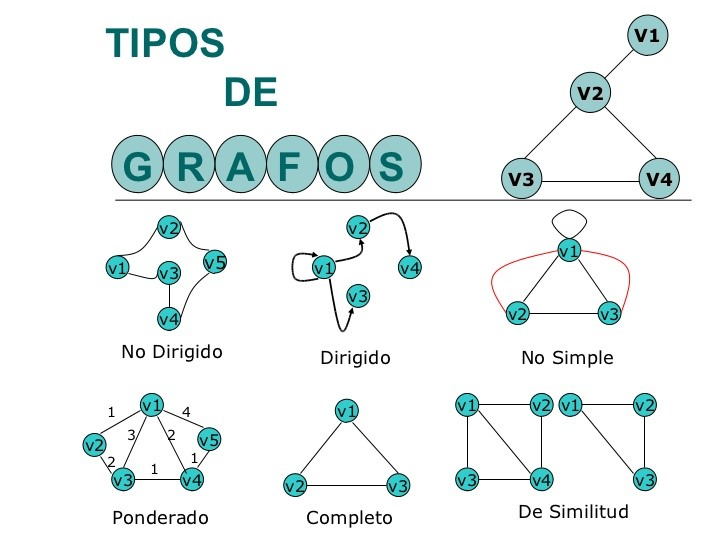

Tema: Teoría de Grafos
Teoría
Teoría de Grafos (pdf)
Ejercicios
Lista de Ejercicios
Tutoria12
Tutoria13
Exámen anterior
Recursos adicionales
Libro: Matemáticas Discretas
Capitulo: Teoría Grafos
Capitulo: Teoría Grafos(Material del Profesor)
